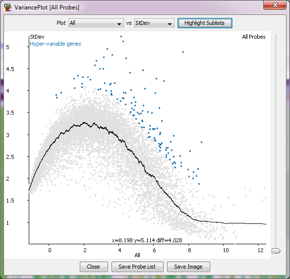

The Variation Plot
The variation plot can be used to visulise and filter probes which show unusual levels
of variation across a number of data stores in a replicate set.
The plot is a scatterplot showing the value of one of a set of different variation
measures against the current quantitation. Most commonly this quantiation will be
some measure of read density (RPM for example), but it could be anything.

In addition to visualising the relationship the plot also shows a smoothed regression
through the data to see the general trend, and allows you to click and drag to select
points on the basis of their difference from this regression. Having selected points
in this way you can save them to a probe list using the button at the bottom of the plot.
Options
- You can choose which replicate set you wish to plot using the drop down box at the top
- You can choose which variance measure you want to use:
- Coefficient of variation - only works with quantitation methods which don't span zero - so
not good for log transformed data.
- Standard deviation
- Standard error of the mean
- Quartile coefficient of dispersion
- Number of unmeasured data stores - this is only useful where you have used a quantiation
method in which unmeasured points are given a NaN value rather than a real number, eg the
mRNA quantitaion with the option to not quantitate unmeasured genes
- You can adjust the size of the dots in the plot using the slider on the right
- You can save a probe list of the points you've selected
- You can save an image of the plot